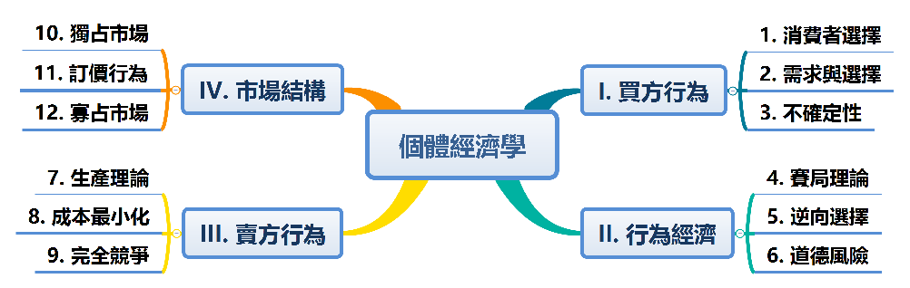

by 田弘華 Hung-Hua Tien
課程說明
Unit 0-1: 學術技能 - 閱讀 pdf
Unit 0-2: 理性選擇 Handouts
主題：從經濟觀點看選擇行為

I.買方行為
Unit I-1：消費者選擇 Handouts Homework
Unit I-2：需求與選擇 Handouts Homework
Unit I-3：不確定性
II. 行為經濟
Unit II-1：賽局理論 case Homework Handouts-pdf
Unit II-2：資訊經濟 Handouts Homework
Unit II-3：行為經濟
III. 賣方行為
Unit III-1：生產理論 Handouts Homework
Unit III-2：成本最小化 Handouts Homework
Unit III-3：完全競爭 Handouts Homework
IV. 市場結構
Unit IV-1：獨占市場 Handouts Homework
Unit IV-2：訂價行為 Handouts Homework
Unit IV-3：寡占市場 Handouts Homework